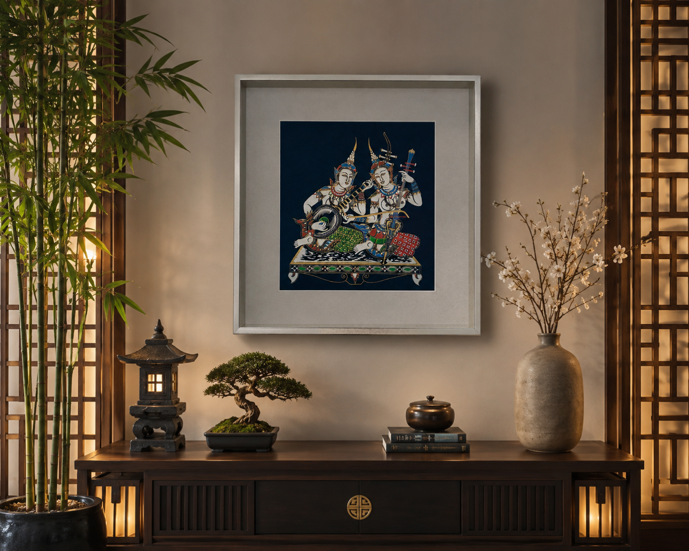
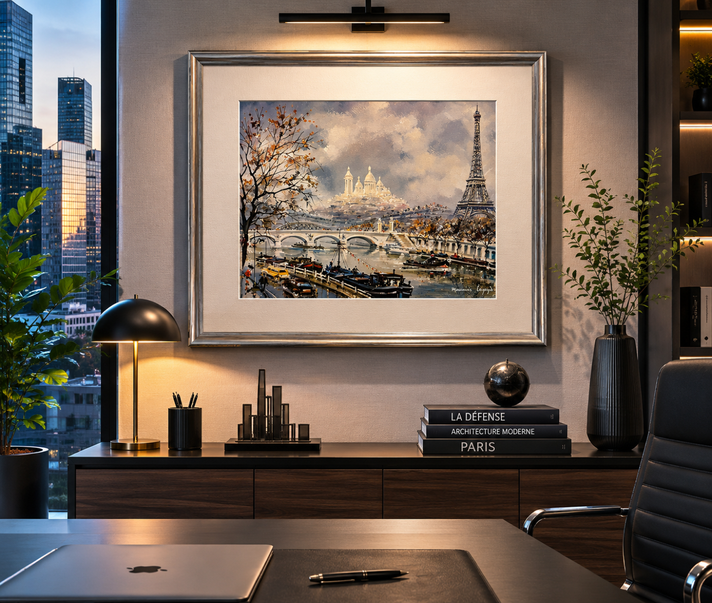
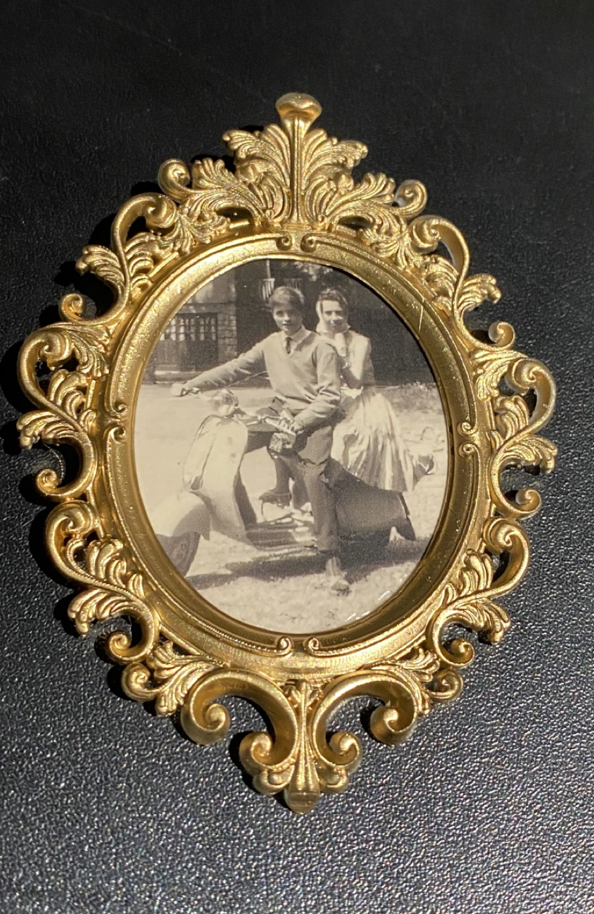
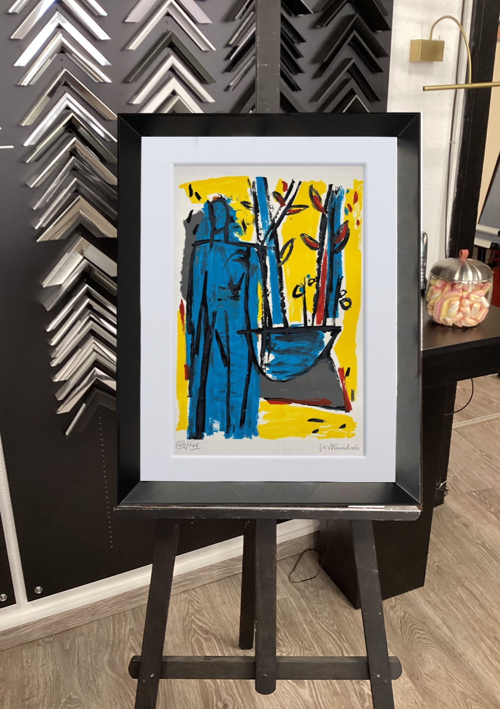
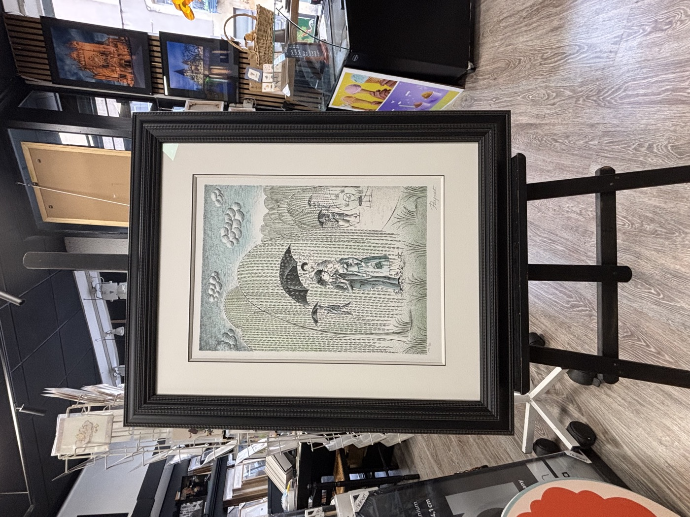
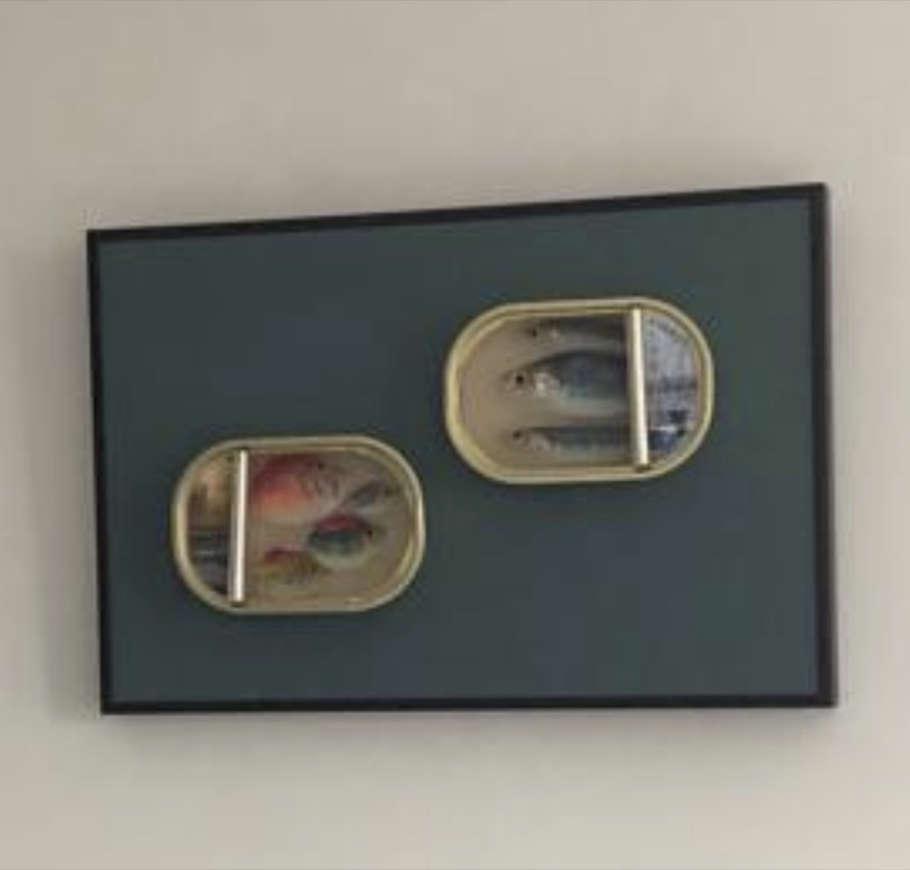

Notre galerie

Encadrement contemporain en intérieur 
Composition murale sur mesure 
Pop-art encadré · pièce signature 
Aquarelle et passe-partout museum 
Street-art · cadre aluminium 
Art graphique · finition Nielsen 
Triptyque photographique 
Série iconographique encadrée 
Encadrement minimaliste 
Galerie privée · mise en scène 
Format paysage · salon 
Vue urbaine · cadre sur mesure 
Botanique · passe-partout crème 
Encadrement classique bois 
Art contemporain · caisse américaine 
Collection · harmonie chromatique 
Série limitée encadrée 
Encadrement museum · verre anti-UV Monument parisien · intérieur Cuisine design · œuvre encadrée Encadrement couleur · chambre Atelier · baguettes et moulures Chevalet et finitions artisanales Détail passe-partout biseauté
Une collection coup de cœur
Passionnés depuis plus de 30 ans, nous avons construit notre espace galerie autour d'œuvres choisies, encadrées et mises en lumière avec le même soin que celui porté à vos objets.





